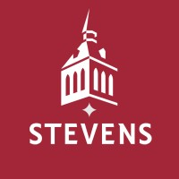

I am a Computer Science student at UNC Charlotte, currently in the MS in Artificial Intelligence Early Entry program, concentrating in AI, Robotics, and Gaming. My coursework and research have centered on computer vision and human-centered AI, including work on spatial audio-augmented navigation tools using Apple Vision Pro, ARKit, and RealityKit to support accessibility for visually impaired users. I am actively applying what I learn through hands-on research and development, working across Swift, Python, and machine learning frameworks to build and test real systems.
Alongside my technical work, I have experience mentoring first-year CS students and volunteering with FIRST Robotics, where I have supported program coordination and helped others build foundational skills and confidence. I am also a Kode With Klossy Scholar and a UR2PhD Scholar, and I currently work as a research intern at Stevens Institute of Technology.
I am particularly interested in research, documentation, and applied AI work that has direct real-world impact, especially where technology can support accessibility and human wellbeing. My goal is to grow into a researcher who can bridge technical development with thoughtful, user-centered design, using intelligently deployed technology to make people's lives better.
Experience

Research Intern
Stevens Institute of Technology, Dr. Jina Huh-Yoo
Built rq-system, a two-phase automated literature pipeline using the PubMed E-utilities, CrossRef, and Perplexity API, processing 345+ papers with a 74.4% inclusion rate across deterministic filtering, AI gating, and structured extraction, and synthesized the findings into structured research questions on mental health and social media data sharing for a funded multi-site consortium.
Lead Instructional Assistant, ITSC 1213
UNC Charlotte College of Computing and Informatics
Lead TA for an asynchronous, fully online Python course, overseeing grading workflows and rubric development across all sections and coordinating a team of TAs to keep feedback consistent. Hold regular office hours to help students work through programming assignments, debug logic errors, and build stronger fundamentals, while working directly with the instructor on assignment design and course policy.
Instructional Assistant, ITSC 3160
UNC Charlotte College of Computing and Informatics
Support a database design course by holding office hours and monitoring course platforms, proactively tracking student progress and reaching out to students who fall behind. Provide targeted help on relational modeling, normalization, and SQL assignments, and assist the instructor with grading and clarifying project requirements.
Instructional Assistant, ITSC 1212
UNC Charlotte College of Computing and Informatics
Led weekly lab sections for an introductory programming course, walking students through core computer science concepts such as control flow, data structures, and functions. Helped students debug their own code, reinforced lecture material with hands-on practice, and graded lab work with feedback aimed at building lasting fundamentals.
Peer Mentor
UNC Charlotte College of Computing and Informatics
Supported first-year students with academic engagement and personal growth through check-ins, group discussions, and events, guiding their performance by promoting effective study habits and campus resources.
Undergraduate Researcher
UNC Charlotte College of Computing and Informatics
Focused on AR/VR accessibility research developing spatial audio-augmented computer vision solutions for visually impaired users. Built Swift-based prototypes using Apple Vision Pro integrating spatial audio cues with machine learning for object identification, targeting 85% accuracy and 30% improved navigation efficiency.
Formal Committee Head
Alpha Omega Epsilon, Beta Kappa Chapter
Coordinated all planning, logistics, and communication for formal events to ensure smooth execution aligned with executive board expectations.